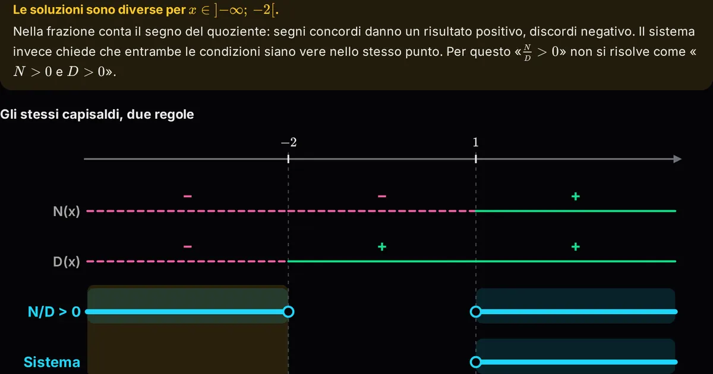

Orfini Math Lab · scheda dell'attività
Laboratorio Interattivo: Sistemi vs Disequazioni frazionarie
Risolutore simbolico passo-passo con Tutor Socratico integrato: metti a confronto la regola dei segni nelle frazionarie con l'intersezione delle soluzioni nei sistemi, senza più fare confusione alla lavagna o sul quaderno.

Temi
- Disequazioni
- Frazionarie
- Logica
- Sistemi
Competenze (Riforma 2017)
- MAT_A3 Risolvere equazioni, disequazioni e sistemi
- MAT_C2 Utilizzare strategie del pensiero razionale per affrontare situazioni problematiche in contesti reali
- MAT_K1 Insiemi numerici e calcolo letterale
Allenati
Su federicodb.github.io/allenamento:
- Disequazioni di primo grado
- Disequazioni di secondo grado
- Sistemi lineari
Mettiti alla prova su carta
Nell'Archivio delle verifiche:
- Verifica di marzo 2026: Algebra manuale di analisi: scomposizioni, Frazioni e modelli logici, Equazioni, Disequazioni, Dominio…
- Verifica di marzo 2026: Equazioni frazionarie, Disequazioni lineari, Sistemi di disequazioni lineari, Disequazioni frazionarie…
- Verifica di marzo 2026: Disequazioni lineari, Sistemi di disequazioni, Disequazioni frazionarie…
Per prepararti alla verifica
- Prima di risolvere scrivi in cima all'esercizio: frazione o sistema? Decide tutto il resto.
- Frazione: studio del segno di numeratore e denominatore, tabella, poi scegli dove il quoziente ha il segno richiesto. Sistema: risolvi ogni disequazione e prendi la parte comune.
- Attenzione: il valore che annulla il denominatore è sempre escluso.
Prova tu. Risolvi $\dfrac{x-2}{x+1} \geq 0$.
Appunti
Soluzione. Numeratore $\geq 0$ per $x \geq 2$; denominatore $> 0$ per $x > -1$. Segni concordi: $x < -1$ oppure $x \geq 2$. $-1$ è escluso (annulla il denominatore), $2$ è incluso (annulla il numeratore).